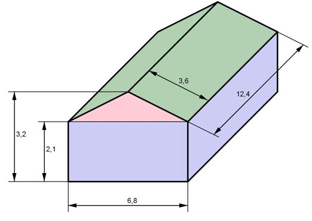

Aufgabe 84 Das Gewächshaus besteht aus Glas. (Alle Maße in m). Wie groß ist die Glasfläche? Der Boden soll mit Platten 40 cm * 40 cm ausgelegt werden. Wie viel Platten werden benötigt? Wie groß ist das Innenvolumen des Gewächshauses?  Glasfläche: Blau (Rechtecke): (2 * 6,8 m + 2 * 12,4 m) * 2,1 m = 80,64 m² Rot (Dreieck): 6,8 m * (3,2 m - 2,1 m) 2 * -------------------------- = 7,48 m² 2 Grün (Rechtecke): 2 * 3,6 m * 12,4 m = 89,28 m² Glasfläche = 80,64 m² + 7,48 m² + 89,28 m² = 177,4 m² Plattenfläche einer Platte: 0,4 m * 0,4 m = 0,16 m² Bodenfläche: 6,8 m * 12,4 m = 84,32 m² 84,32 m² Anzahl Platten = ----------- = 527 0,16 m² V = blaues Rechteckprisma + rotes Dreieckprisma 6,8 m * 1,1 m V = 6,8 m * 12,4 m * 2,1 m + ---------------- * 12,4 m 2 V = 177,072 m³ + 43,376 m³ = 223,4 m³